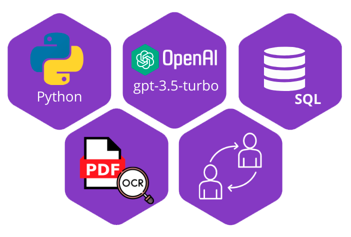

Funcionamiento del Aprendizaje Continuo
● Recopilación de Interacciones: Cada interacción del usuario con el chatbot se
recopila de forma anónima, respetando las normativas de privacidad y protección de
datos.
● Análisis y Aprendizaje: Estos datos se utilizan para identificar patrones, preguntas
frecuentes no resueltas adecuadamente y oportunidades de mejora. Utilizamos
técnicas de aprendizaje automático para ajustar y refinar el modelo de GPT,
mejorando su capacidad de respuesta.
● Ciclo CI/CD: A través de la Integración Continua y Despliegue Continuo, los ajustes
y mejoras en el modelo de IA se implementan de manera fluida y sin interrupciones
en el servicio. Este ciclo asegura que el chatbot se actualiza constantemente con
nuevas capacidades y correcciones, adaptándose de manera efectiva a las
cambiantes necesidades de los usuarios y al contexto operativo de Bancóldex.
